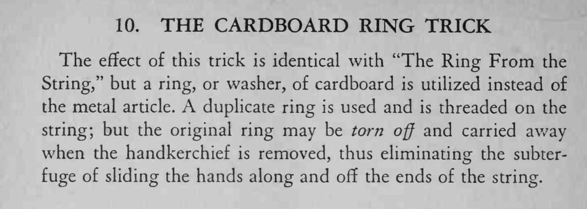

与「绳上取环」效果相同，只是这次用的是硬纸板剪的环——揭开手帕时，它可以直接被撕下来带走。
纸环要薄而好撕，撕的动作必须在布下完成，不能让人看见。

The effect of this trick is identical with "The Ring From the String," but a ring, or washer, of cardboard is utilized instead of the metal article. duplicate ring is used and is threaded on the string; but the original ring may be torn off and carried away when the handkerchief is removed, thus eliminating the subterfuge of sliding the hands along and off the ends of the string.